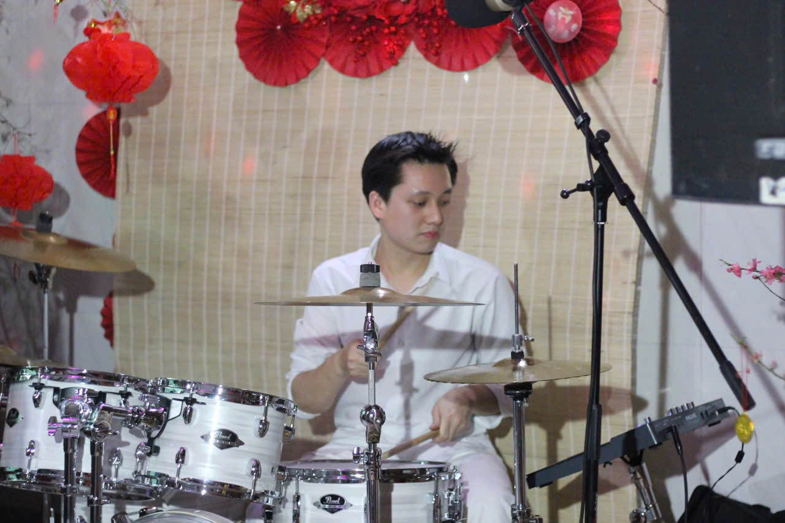
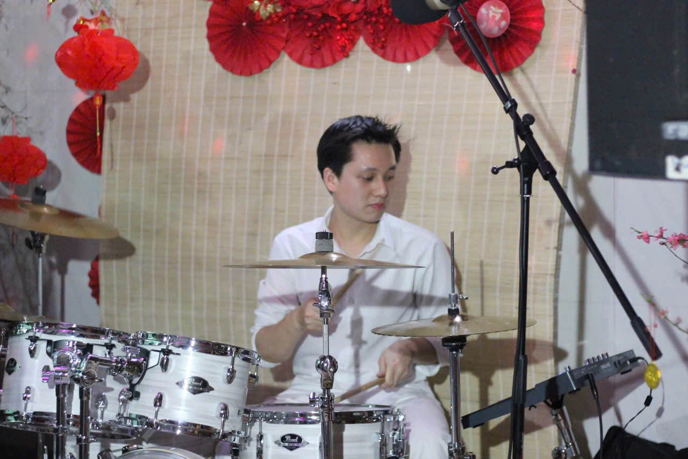

Sol Band – Âm nhạc gắn kết cảm xúc
Sol Band là một nhóm nhạc trẻ, chuyên nghiệp và đầy nhiệt huyết đang hoạt động tại Hà Nội và các tỉnh phÃa Bắc. Chúng tôi mang đến những mà u sắc âm nhạc mộc mạc nhưng tinh tế, phù hợp với má»i không gian – từ các sự kiện lớn cho đến những buổi tiệc thân máºt, gần gũi.
Với đội hình linh hoạt và dà y dặn kinh nghiệm biểu diễn thực tế, Sol Band không chỉ là người chơi nhạc – mà là người đồng hà nh cùng cảm xúc của bạn và khách má»i trong từng khoảnh khắc.
🔥 Dịch vụ Sol Band cung cấp:
- Ban nhạc biểu diễn chuyên nghiệp theo yêu cầu
- Ca sĩ, nhạc công già u kinh nghiệm – có thể chơi từ set nhẹ nhà ng đến sôi động
Biểu diễn tại:
- Sự kiện công ty, tiệc cưới, khai trương, hội nghị, gala dinner, year-end party (YEP)
- Quán cafe, nhà hà ng, lounge, pub, sân khấu ngoà i trá»i
- Tour du lịch nghỉ dưỡng, tiệc riêng tư, sự kiện quy mô nhá»
Ngoà i âm nhạc:
Nháºn cung cấp DJ, MC, Dancer, PG, hệ thống âm thanh ánh sáng chuyên nghiệp
🵠Phong cách biểu diễn
Từ Acoustic chill, Ballad sâu lắng, đến Pop – R&B hiện đại hay những bản phối House – Remix sôi động, Sol Band có thể linh hoạt theo từng không gian và chủ đề chương trình. Mỗi set diễn được chuẩn bị kỹ lưỡng, phối hợp ăn ý giữa các thà nh viên để đảm bảo mang đến trải nghiệm trá»n vẹn nhất.
🸠Dà n nhạc cụ – Äá»™i hình biểu diễn
Chúng tôi sở hữu đội hình biểu diễn đa dạng và đầy đủ:
Guitar | Keyboard | Trống | Djembe | Bass | Saxophone | Violin, cùng với các ca sĩ được đà o tạo bà i bản, già u cảm xúc.
💬 Vì sao chá»n Sol Band?
- Là m việc trực tiếp, không qua trung gian
- Linh hoạt theo yêu cầu: thá»i gian, thể loại, quy mô
- Chi phà minh bạch, phù hợp ngân sách
- Äá»™i ngũ đúng giỠ– chuyên nghiệp – thái độ chuẩn
Sol Band không chỉ mang âm nhạc đến sự kiện của bạn, mà còn góp phần tạo nên những khoảnh khắc đáng nhớ, những cảm xúc chân tháºt và không khà gần gũi. Hãy để chúng tôi là người đồng hà nh cùng bạn trong những dịp quan trá»ng – bằng âm nhạc, và bằng sự táºn tâm.
🤠THÀNH VIÊN BAND

Phạm Duy Việt
Keyboardist
Giới thiệu qua vỠbản thân
Là một trong những thà nh viên đầu tiên của Sol Band, Duy Việt mang đến nguồn năng lượng trẻ trung nhưng cũng đầy sâu lắng qua từng tiếng Ä‘Ã n. Đảm nháºn vị trà keyboard, Việt không chỉ là người tạo ná»n cho giai điệu mà còn góp phần định hình chất âm riêng cho từng bà i hát của nhóm.
Tiếp xúc với âm nhạc từ sớm, bắt đầu bằng niá»m yêu thÃch nghe nhạc và ca hát, Việt đã tự há»c chơi Ä‘Ã n piano từ những năm cấp 3 – khoảng thá»i gian thanh xuân đẹp nhất và cũng là lúc cáºu bắt đầu hình thà nh đam mê âm nhạc một cách nghiêm túc. Từ niá»m yêu thÃch ban đầu, Việt dần tự mà y mò thêm vá» hòa âm, phối khà và kỹ thuáºt biểu diễn, dần hoà n thiện phong cách chơi Ä‘Ã n mang bản sắc cá nhân.
Kỹ năng chuyên môn
Trong ban nhạc, keyboard là nhạc cụ có khả năng "dẫn lối cảm xúc", và Duy Việt là m điá»u đó một cách tự nhiên, tinh tế. Cáºu luôn biết tiết chế, đặt cảm xúc của bà i hát lên trên phần thể hiện cá nhân. Dù là đoạn intro đơn giản hay những lớp pad ná»n sâu lắng, tiếng Ä‘Ã n của Việt luôn mang lại cảm giác ấm áp, gắn kết và hỗ trợ tốt cho giá»ng hát chÃnh.
Bên cạnh khả năng biểu diễn, Việt còn đóng vai trò quan trá»ng trong việc chá»n tiếng, setup hiệu ứng, hỗ trợ phối khà và xây dựng ý tưởng hoà âm cùng các thà nh viên khác. Cáºu có tư duy âm thanh hiện đại, phù hợp với phong cách pop, R&B, acoustic và ballad mà Sol Band theo đuổi. Ngoà i ra, Việt thường tìm cảm hứng từ các thể loại như lo-fi, nhạc phim, soul – những dòng nhạc ảnh hưởng rõ nét đến cách cáºu xá» lý phần hòa âm của mình.
Kinh nghiệm biểu diễn
Mặc dù còn khá trẻ, Duy Việt đã có nhiá»u năm biểu diễn sân khấu cùng Sol Band. Cáºu không chỉ quen thuộc với việc chơi các bản phối đã táºp sẵn mà còn có khả năng ứng biến linh hoạt với các ca khúc chưa từng nghe qua – điá»u thường thấy trong các buổi diễn có yêu cầu ngẫu hứng từ khán giả. Trong những tình huống đó, Việt luôn tìm được lối hòa âm phù hợp để hỗ trợ ca sĩ thể hiện bà i hát một cách trá»n vẹn.
Ngoà i ra Việt từng đứng trên nhiá»u sân khấu lớn nhá», từng chơi nhạc cho Hoà ng Dũng, Grey D trong một và i sự kiện,...
Đối với Việt, mỗi buổi táºp hay buổi diễn đều cần được chuẩn bị kỹ cà ng – không chỉ là mặt kỹ thuáºt, mà cả tinh thần. Cáºu luôn giữ thái độ cầu thị, sẵn sà ng lắng nghe và há»c há»i từ má»i trải nghiệm biểu diễn, góp phần tạo nên một hình ảnh keyboardist vừa vững chuyên môn, vừa già u cảm xúc trong mắt khán giả.

Ngô Ngá»c Duy
Drummer
Giới thiệu qua vỠbản thân
Nếu Sol Band là một cơ thể sống, thì Ngá»c Duy chắc chắn là "trái tim" của nhóm – người giữ nhịp, giữ vững tinh thần và kết nối má»i thứ lại với nhau bằng… tiếng trống. Là thà nh viên chơi drum của band, Duy không quá nhiá»u lá»i, cũng chẳng hay đứng ở vị trà trung tâm, nhưng cứ mỗi lần lên sân khấu, cáºu luôn khiến cả nhóm cảm thấy yên tâm vì nhịp của mình đang nằm trong những cú đánh chắc chắn.
Duy đến với trống từ khá sớm – một phần vì tò mò, một phần vì cảm thấy "được là chÃnh mình" khi ngồi sau bộ drum. Ban đầu chỉ là những tiếng gõ vui tay trong phòng há»c, sau đó là những ngà y tự mà y mò há»c từ video trên mạng, và rồi dần dần, trống trở thà nh một phần quen thuộc trong cuộc sống. Gia nháºp Sol Band từ những ngà y đầu, Duy không nói nhiá»u, nhưng luôn có mặt đúng lúc – cả trong âm nhạc lẫn trong những lần dá»n đồ sau diễn.
Kỹ năng chuyên môn
Trống của Duy không ồn à o – mà "vừa đủ". Không đánh quá tay để gây chú ý, cũng chẳng phô trương kỹ thuáºt, Duy chá»n cách đánh gá»n gà ng, rõ rà ng, táºp trung và o nhịp và cảm xúc. Những cú kick trầm chắc, tiếng snare rõ rà ng, những đoạn fill vừa đủ khiến bà i nhạc được đẩy lên mà vẫn giữ được sự nhẹ nhà ng đặc trưng của Sol Band.
Cáºu cũng khá nghiêm túc trong việc há»c há»i và nâng cấp kỹ năng – từ cách giữ tempo ổn định, cách lắng nghe từng phần nhạc cụ khác, đến việc thá» nghiệm trống điện tá», sample pad… để phù hợp với những bà i có hơi hướng hiện đại. Duy thường là người đầu tiên đến buổi táºp để chỉnh lại set drum, thá» tiếng, và cũng là người cuối cùng dá»n đồ sau mỗi buổi diễn.
Kinh nghiệm biểu diễn
Dù còn khá trẻ, Ngá»c Duy đã có kha khá kinh nghiệm biểu diễn – từ những buổi minishow nhá», các sự kiện sinh viên đến sân khấu lớn hơn. Cáºu là kiểu người không cần nói nhiá»u trước giá» diễn, nhưng khi má»i người bước lên sân khấu, ai cũng biết: chỉ cần Duy gõ nhịp là cả band sẽ ổn.
Có nhiá»u lần band phải chơi bà i mới theo yêu cầu của khán giả, chưa ai kịp bà n với ai thì Duy đã đếm nhịp và bắt đầu. Không phải lúc nà o cũng hoà n hảo, nhưng nhá» sự bình tĩnh và nhạy cảm với tiết tấu, cáºu luôn giúp cả nhóm tìm được "điểm tựa" để thể hiện hết mình.
Ngá»c Duy không phải kiểu người thÃch spotlight, nhưng lại là người không thể thiếu để má»i thứ được váºn hà nh trơn tru. Và với Sol Band, cáºu ấy là người "gõ nhịp" không chỉ cho âm nhạc, mà còn cho cả tinh thần của nhóm.
Đỗ Xuân Hải (Hải Andy)
Vocalist
Giới thiệu qua vỠbản thân
Hải Andy là một vocal có niá»m đam mê âm nhạc từ năm 11 tuổi. Sở hữu phong thái tự tin cùng phong cách âm nhạc đa dạng và già u mà u sắc, Hải luôn biết cách đưa người nghe trải qua trá»n vẹn cung báºc cảm xúc của mỗi bà i hát.
Điểm đặc biệt ở Hải Andy là sự kết hợp hà i hòa giữa vẻ ngoà i giản dị, phong cách lịch sự và một chút tinh nghịch, đáng yêu – điá»u khiến khán giả không chỉ nghe nhạc mà còn cảm thấy gần gũi, thoải mái khi theo dõi phần trình diễn. Với hơn 6 năm kinh nghiệm biểu diễn, Hải luôn tìm cách đổi mới bản thân qua từng sân khấu, mang đến những phần trình diễn sống động, chân tháºt và đầy cảm xúc.
Kỹ năng chuyên môn
Hải sở hữu khả năng thể hiện đa dạng thể loại âm nhạc, từ Ballad, Pop, Rock, R&B, Rap, cho tới nhạc dân gian, dân ca quan há», thÃnh phòng – cho thấy khả năng cảm nhạc phong phú và linh hoạt của mình.
Ngoà i giá»ng hát nội lực và biểu cảm sân khấu tốt, Hải còn có khả năng sáng tác, là m MC sân khấu và dẫn dắt khán giả. Những phần trình diễn của Hải luôn có sự kết nối mạnh mẽ với người nghe – không chỉ đơn thuần là ca hát mà còn là "giao tiếp bằng cảm xúc" qua ánh mắt, cá» chỉ và năng lượng tÃch cực.
Kinh nghiệm biểu diễn / Dự án
Hải Andy đã có nhiá»u năm hoạt động âm nhạc và biểu diễn tại đa dạng không gian – từ sân khấu lớn đến các chương trình gần gũi, thân máºt. Một số hoạt động nổi báºt có thể kể đến:
- 2 năm biểu diễn dân ca quan hỠBắc Ninh
- Chung kết cuộc thi Giá»ng hát hay mở rộng Đông Anh
- Sơ khảo cuộc thi Tiếng hát hay Đông Anh
- Sự kiện đại tiệc SURYA GROUP
- Biểu diễn tại các phòng trà , quán cafe, trung tâm thương mại, tiệc cưới và các chương trình sự kiện – event lớn nhỠkhác
Dù đứng ở đâu, Hải luôn thể hiện rõ sự chuyên nghiệp, cuốn hút và linh hoạt của một người biểu diễn có kinh nghiệm – không chỉ là người hát, mà còn là người kể chuyện bằng âm nhạc.

Tạ Đức Trung
Guitarist
Giới thiệu qua vỠbản thân
Đức Trung bắt đầu chơi guitar từ năm 16 tuổi, và niá»m đam mê với âm nhạc đã gắn bó với cáºu kể từ đó. Với phong cách kết hợp giữa cảm xúc mộc mạc của acoustic và sự bùng nổ, mạnh mẽ của rock hiện đại, Trung luôn tìm kiếm cách để "kể chuyện" bằng giai điệu và nhịp điệu, thay vì chỉ đơn thuần là chơi những nốt nhạc.
Hơn 5 năm tìm hiểu, luyện táºp và 4 năm biểu diễn thực tế đã giúp Trung hình thà nh một lối chơi riêng, cảm xúc nhưng không thiếu kỹ thuáºt, mộc mạc nhưng vẫn đầy năng lượng khi cần thiết.
Kỹ năng chuyên môn
Đức Trung có khả năng linh hoạt trong nhiá»u thể loại: Rock, Ballad, Acoustic, Pop, với điểm mạnh nằm ở việc kết hợp lead và rhythm một cách mượt mà . Cáºu có thể freestyle riff và giai điệu trong lúc jam hoặc biểu diễn, đồng thá»i cũng thà nh thạo trong việc hòa âm, thu âm tại nhà , phục vụ cho các dự án cá nhân hoặc hoạt động cùng band.
Trung còn có khả năng chuyển soạn fingerstyle và tự viết tab cho những ca khúc nhạc thị trường – một kỹ năng giúp cáºu luôn chủ động và sáng tạo hơn trong quá trình luyện táºp cũng như biểu diễn.
Kinh nghiệm biểu diễn / Dự án
Hiện tại, Đức Trung giữ vai trò lead guitarist của Sol Band, nơi cáºu không chỉ thể hiện kỹ thuáºt mà còn góp phần định hình "chất" riêng trong từng ca khúc. Trung từng tham gia biểu diễn tại nhiá»u sự kiện lớn như:
- Chung kết Toán TOFAS Toà n Cầu 2024
- Các chương trình nghệ thuáºt của CLB Nghệ Thuáºt Thanh Huyá»n (Đông Anh)
- Nhiá»u sự kiện sinh viên tại các trường đại há»c như Há»c viện Ngân Hà ng, Há»c viện Bưu chÃnh Viễn thông (PTIT)…
Trên sân khấu, Trung luôn là người mang lại năng lượng tÃch cực, dù là với tiếng Ä‘Ã n nhẹ nhà ng sâu lắng hay những đoạn solo bùng nổ. Cáºu không ngừng trau dồi bản thân và luôn tìm kiếm cơ hội để đưa âm nhạc của mình đến gần hơn với khán giả.


 
